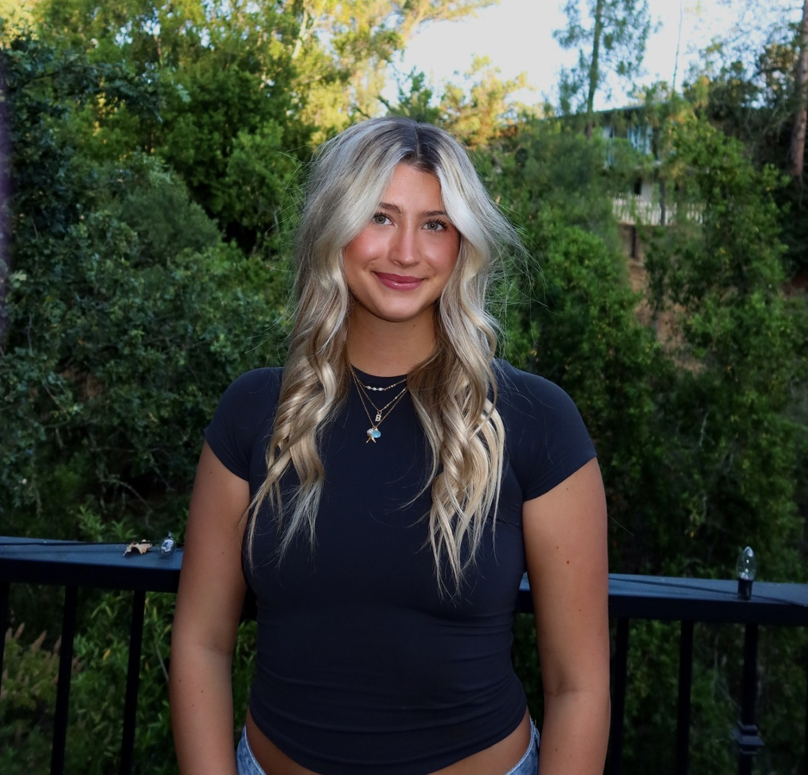
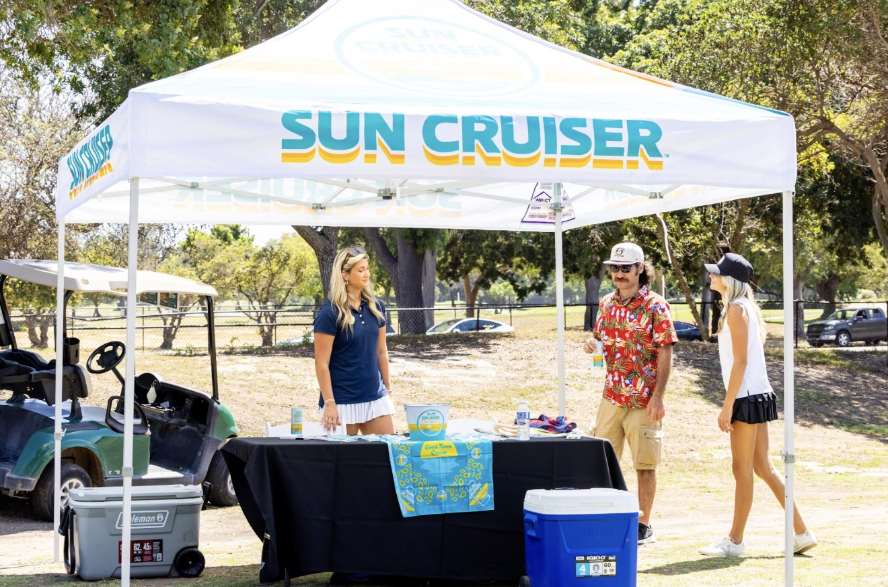

Communication · Digital culture · Data
Brielle Hardman
I'm a senior at TCU studying Communication Studies with a minor in Digital Culture and Data Analytics. I bring a thoughtful, people-first perspective to digital projects, storytelling, and the details that make an experience useful.


Experience · Boston Beer
A summer spent learning by doing.
This summer, I interned with Boston Beer and gained hands-on experience in sales and marketing. I worked with retailers, supported product promotions, and interacted directly with customers, growing more confident in professional communication.
I also created a final internship presentation summarizing my sales experience, customer interactions, retail observations, and ideas for reaching college-age consumers.
More about my backgroundSelected work · WRIT 40363
Built with curiosity.
A collection of class projects exploring personal storytelling, practical tools, data, and the everyday ritual of deciding what to eat.
-
01 / PORTFOLIO
Original Portfolio
The first portfolio iteration: a personal introduction to my background, skills, internship experience, and work.
HTML · CSS
View project -
02 / EVERYDAY TOOL
Local Favorites Tracker
A simple way to save favorite places, organize them by category, and find them again with search and filters.
HTML · CSS · JavaScript · localStorage
View project -
03 / PERSONAL DASHBOARD
Data Dashboard
A responsive dashboard bringing sample weather, a quote generator, and a persistent task list into one place.
HTML · CSS · JavaScript · JSON
View project -
04 / FOOD DISCOVERY
Swipe & Bite
A food discovery experience for exploring recipes and restaurants, saving favorites, and finding them on a map.
HTML · CSS · JavaScript · Leaflet
View project